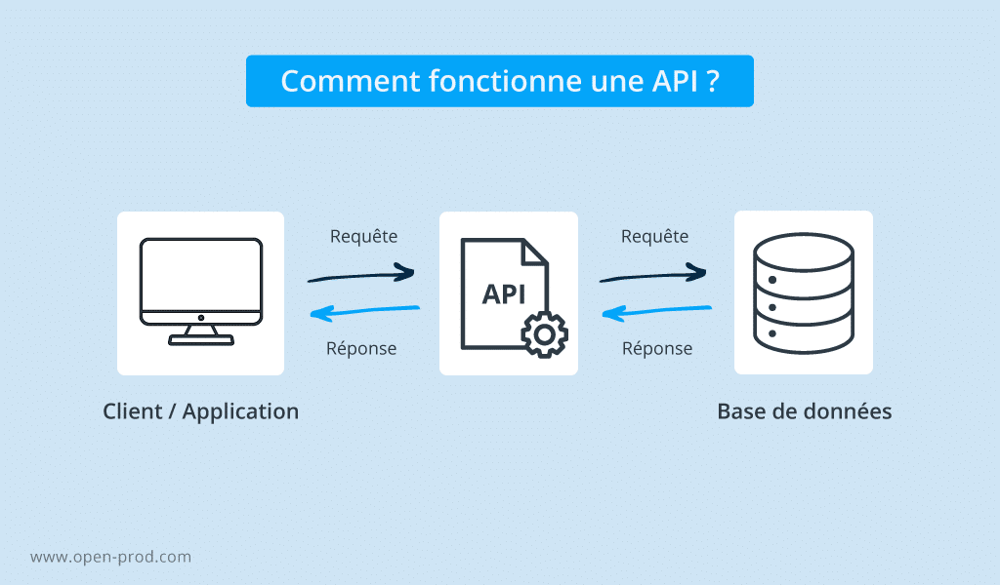

API
Définition d'une API
Une API, pour Application Programming Interface (interface de programmation d'application en français), est un ensemble de protocoles qui facilite la communication entre une ou plusieurs applications. Les API permettent à un produit ou un service de communiquer avec d'autres produits et services, sans forcément connaître comment il a été construit. Cela simplifient le développement d'applications et font ainsi gagner beaucoup de temps et d'argent. Les développeurs réalisent moins de code et contribuent à créer plus de cohérence avec les applications d’une même plateforme. Par exemple, lorsque que vous consultez la météo sur votre téléphone, vous utilisez une API. L’application vient récupérer les données météorologiques depuis un serveur, pour être manipulé et retransmis sur votre téléphone. Quel est l’objectif d’une API ?
- Simplifier le développement de certaines applications Afin de conserver une compétitivité face au changement rapide du numérique, il est important de favoriser le développement et le déploiement d’une application rapidement. Grâce aux API, les développeurs pourront intégrer des composants dans une architecture existante.
- Faciliter la connexion et le partage de données Grâce au système d’API publique, l’API est accessible à tous, permettant d’autoriser un tiers à développer une application qui interagit avec l’API et ainsi permettre d’élargir les innovations.
- Ouvrir l'accès des ressources de façon sécurisée Les API permettent d’ouvrir votre infrastructure, tout en garantissant un contrôle et une sécurité. En effet, vous choisissez les ressources que vous voulez partager et avec qui. De plus, la communication entre l’API et l’application peut se faire par l’intermédiaire d’une plateforme d’intégration distribuée.